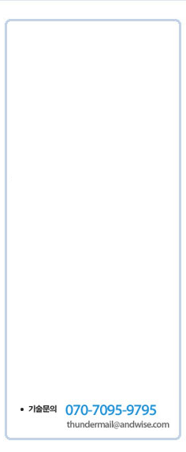
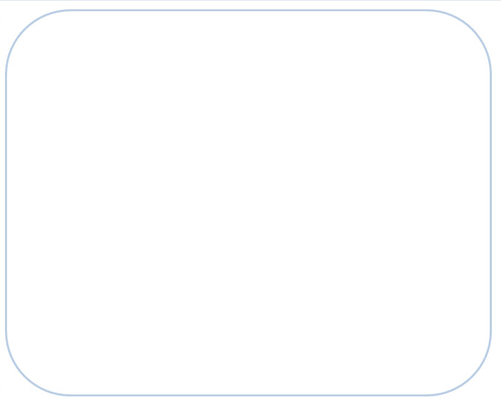
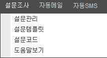

|
||||
|  |  | |||
① 설문조사
- 썬더메일에서는 설문내용이 메일본문에 링크로 삽입되는 형태를 통하여 설문조사를 진행하실 수 있도록
기능을 제공해 드리고 있습니다. 메일을 받은 회원이 설문링크를 클릭하시면 새로운 웹페이지에서 설문
내용을 확인 및 응답하실 수 있으며, 설문 결과는 통계에서 확인하실 수 있습니다.
② 설문조사 메뉴구성

- 설문관리 : 설문문항 추가 및 설문지를 작성하는 메뉴입니다. 객관식/주관식/필수응답/단일응답/복수응답 등의 설정을 통하여 설문지를 작성하실 수 있습니다.
- 설문템플릿 : 설문내용을 구성하는 메뉴이며, 설문문항을 작성하시기 전에 필수적으로 진행하셔야 됩니다. [설문제목],[시작문구],[설문문항],[종료문구]의 위치를 설정하시게 되며, 한번 등록해 놓으시면 재활용이
가능합니다.
- 설문코드 : 설문유형 및 보기유형을 관리하는 메뉴입니다.
1)설문유형이란?
진행하는 설문의 종류에 따라 유형을 분류하실 수 있습니다.
Ex. 만족도/교육평가/기타 등등
2) 보기유형이란?
자주 사용하시게 되는 보기유형을 등록하여 두면 편리하게 문항을 작성하실 수 있습니다.
- 도움말보기 : 썬더메일 설문 도움말입니다.